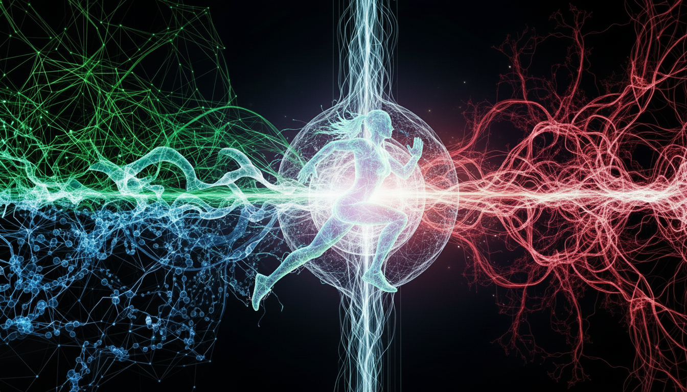

Your Autonomous Performance Partner
ItsTheBee.com is a biomimetic microrobot that delivers real-time biomechanical analysis, predictive insights, and a closed-loop feedback system to optimize your human potential.
Your Biomechanical Guardian
An autonomous biomimetic microrobot accompanies you. Equipped with piezoelectric wings and neuromorphic chips, it flies silently, analyzing your posture and gait in real-time with its high-fidelity and IR-capable camera.
- ✓Autonomous Navigation (SLAM & Optical Flow)
- ✓AI-Powered Pose Analysis & Form Correction
- ✓Ambient Energy Harvesting (Solar & RF)
Real-Time Biochemistry
The drone's mechatronic 'stinger' deploys a painless sensor payload. v1.0 monitors Glucose & Lactate. v2.0 introduces bio-absorbable 'Smart Dust', which the drone scans to read inflammation and oxidative stress markers.
- ✓Painless Micro-needle Probe (Interstitial Fluid)
- ✓Smart Dust detection via drone's IR camera
- ✓100% biocompatible & bio-absorbable materials
Connect With Your Mind
The sensory earpiece monitors your cognitive state. Using Ear-EEG and bioimpedance, it detects mental fatigue, cognitive load, and—most importantly—your 'flow state'.
- ✓Adaptive AI Coaching (Tone, frequency)
- ✓'Flow State' detection (do-not-disturb mode)
- ✓Concise, actionable audio feedback
The Causal Digital Twin
This is where it all converges. Our AI Core, powered by the Bee's data stream, understands causal chains. It learns how your biochemistry affects your form, and how your neural state impacts your performance.
Injury Prediction
Identify biomechanical fatigue precursors and injury risk before they happen, based on subtle changes in your form and inflammatory markers.
Performance Optimization
Receive predictive guidance. The AI suggests when to push, when to recover, and what nutrients you need, all based on your real-time state.
Early Detection
Continuous monitoring of key biomarkers allows for early detection of physiological anomalies, from pre-diabetes to hormonal imbalances.
From a Legacy of Performance
ItsTheBee.com was founded by Angela Uribe, a Biomedical Engineer from Tec de Monterrey. Her inspiration wasn't found in a lab, but on the track.
In 2032, her grandfather, Rafael Uribe, stunned the world by becoming the 400m world champion in his category at 60 years old. Rafael trained with obsessive intuition, keeping handwritten journals of his sleep, nutrition, and mood. He understood the *connection* between systems.
Angela, watching his relentless pursuit, saw the gap: he was reacting to past data. What if he could have predicted his body's needs in real-time?
"My grandfather proved that peak performance has no age limit. We built 'The Bee' to give everyone the insights to find their own peak, guided by data and inspired by his legacy."
The future of human performance is here.
ItsTheBee.com is a research-grade system now available for elite athletes, researchers, and performance pioneers. Secure your autonomous performance partner today.
Starting from 9.99 BTC